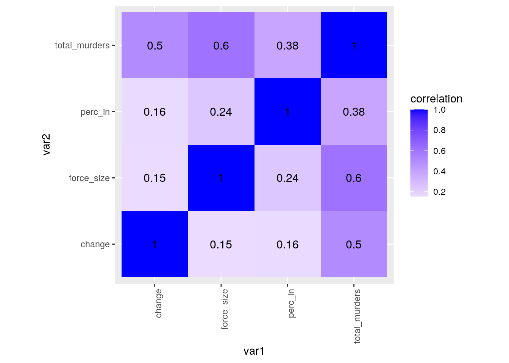
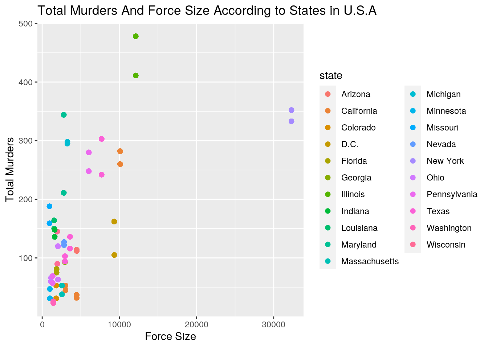
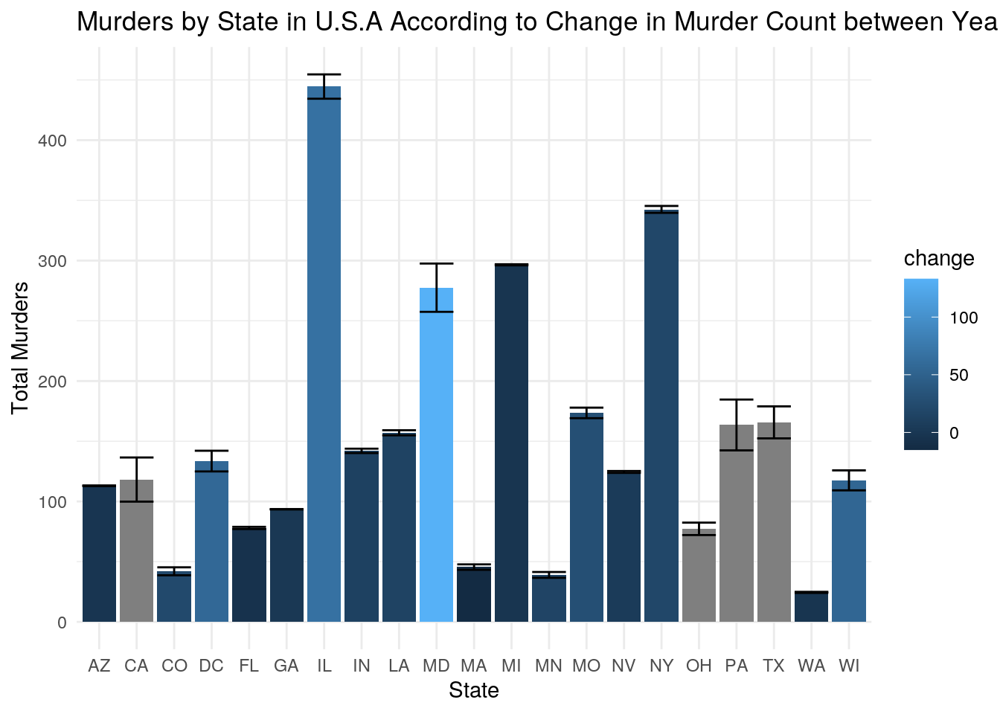
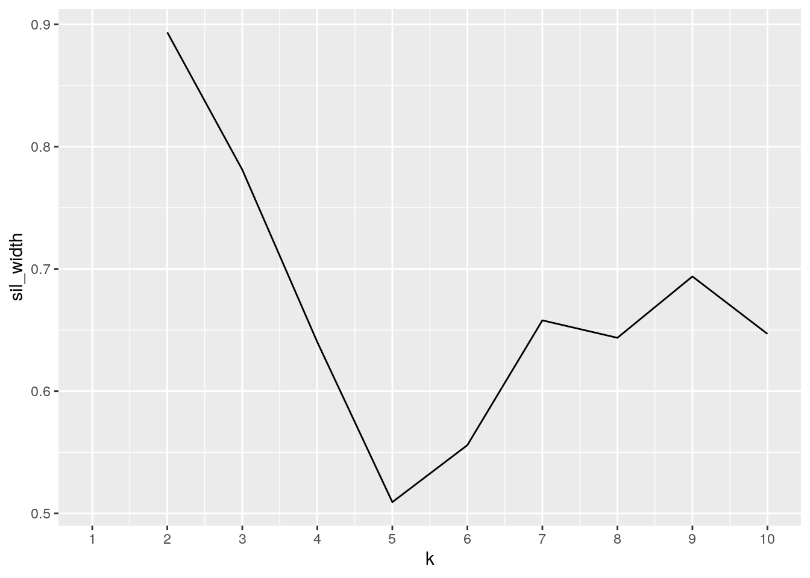
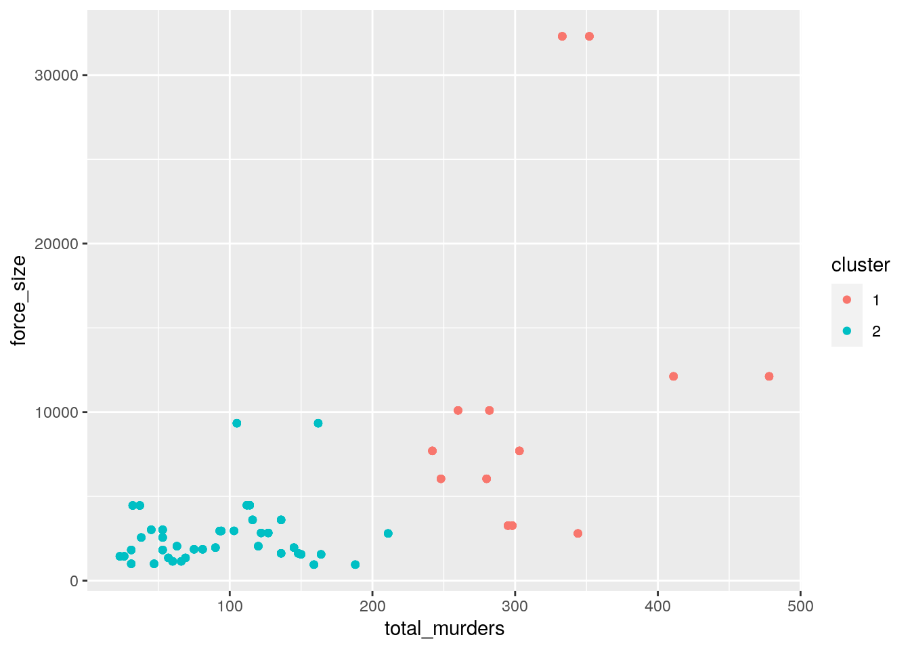

The two data sets I used are “murder_2015_final” and “police_locals”.The “murder_2015_final” data set (m15f) contained five variables (two character and three numeric), and it had eighty-three observations. After tidying, the number of variables remained five (three character and two numerical), and it had a hundred and sixty-six observations. The “police_locals” data set (pl) contained eight variables (one character and seven numeric), and it had seventy-five observations. After tidying, it had four variables (two character and two numerical), and it had four hundred and fifty observations. The “police_local” data set was acquired using calculations based on the U.S. Census, and this data set was interesting to me because it was compiled in response to the racially driven Ferguson protests that occurred in Missouri; the creators of the data set reasoned that if Ferguson had a huge racial gap in its population it should also be reflected in the police force assuming that they were locals. This reasoning caused the creators to compile a data set questioning the living situations of police in major cities. The “murder_2015_final” data set was acquired from the FBI crime data, this data was interesting to me because I was curious to see if force size (gotten from the police_locals data set) would have an effect on murders. I would expect that large police forces would have fewer murder cases or at least a negative change in murders between 2014 and 2015.
library(fivethirtyeight)
library(tidyverse)
write_csv(murder_2015_final, "m15f.csv")
getwd()## [1] "/stor/home/oaa847/website/content/project"m15f <- read_csv("m15f.csv")
str(m15f)## tibble [83 × 5] (S3: spec_tbl_df/tbl_df/tbl/data.frame)
## $ city : chr [1:83] "Baltimore" "Chicago" "Houston" "Cleveland" ...
## $ state : chr [1:83] "Maryland" "Illinois" "Texas" "Ohio" ...
## $ murders_2014: num [1:83] 211 411 242 63 105 90 248 78 41 159 ...
## $ murders_2015: num [1:83] 344 478 303 120 162 145 280 109 72 188 ...
## $ change : num [1:83] 133 67 61 57 57 55 32 31 31 29 ...
## - attr(*, "spec")=
## .. cols(
## .. city = col_character(),
## .. state = col_character(),
## .. murders_2014 = col_double(),
## .. murders_2015 = col_double(),
## .. change = col_double()
## .. )write_csv(police_locals, "pl.csv")
getwd()## [1] "/stor/home/oaa847/website/content/project"pl <- read_csv("pl.csv")
str(pl)## tibble [75 × 8] (S3: spec_tbl_df/tbl_df/tbl/data.frame)
## $ city : chr [1:75] "New York" "Chicago" "Los Angeles" "Washington" ...
## $ force_size: num [1:75] 32300 12120 10100 9340 7700 ...
## $ all : num [1:75] 0.618 0.875 0.228 0.116 0.292 ...
## $ white : num [1:75] 0.4464 0.872 0.1528 0.0568 0.1737 ...
## $ non_white : num [1:75] 0.764 0.877 0.264 0.157 0.399 ...
## $ black : num [1:75] 0.771 0.897 0.387 0.17 0.366 ...
## $ hispanic : num [1:75] 0.7629 0.8398 0.2177 0.0899 0.4571 ...
## $ asian : num [1:75] 0.749 0.967 0.305 0.231 0.408 ...
## - attr(*, "spec")=
## .. cols(
## .. city = col_character(),
## .. force_size = col_double(),
## .. all = col_double(),
## .. white = col_double(),
## .. non_white = col_double(),
## .. black = col_double(),
## .. hispanic = col_double(),
## .. asian = col_double()
## .. )For both data sets, I noticed that there were several variables that could be grouped together under a column. So for the “pl” data set, I used “pivot_longer” to group the variables: all, white, non_white, black, hispanic and asian, under a new variable that I called “race” and I put their values in a new variable called “perc_in” which means the percentages of the police depending on race that are locals in their city; this new tidy data set was termed “pl_tidy”. Then for the “m15f” data set, I used “pivot_longer” to group the variables: murders_2014, murders_2015, under a new variable that I called “year” and I used the “separate function” to rename the observations in the column into “2014” and “2015”; this new tidy data set was termed “m15f_tidy”. I noticed after tidying this data set that the variable “year” was numeric, but I wanted it to be a character variable so I used ‘as.character’ to make it one.
pl_tidy <- pl %>% pivot_longer(all:asian, names_to = "race",
values_to = "perc_in")
str(pl_tidy)## tibble [450 × 4] (S3: tbl_df/tbl/data.frame)
## $ city : chr [1:450] "New York" "New York" "New York" "New York" ...
## $ force_size: num [1:450] 32300 32300 32300 32300 32300 ...
## $ race : chr [1:450] "all" "white" "non_white" "black" ...
## $ perc_in : num [1:450] 0.618 0.446 0.764 0.771 0.763 ...m15f_tidy <- m15f %>% pivot_longer(3:4, names_to = "years", values_to = "total_murders") %>%
separate(years, into = c(NA, "year"), sep = 8, convert = T)
m15f_tidy$year <- as.character(m15f_tidy$year)
str(m15f_tidy)## tibble [166 × 5] (S3: tbl_df/tbl/data.frame)
## $ city : chr [1:166] "Baltimore" "Baltimore" "Chicago" "Chicago" ...
## $ state : chr [1:166] "Maryland" "Maryland" "Illinois" "Illinois" ...
## $ change : num [1:166] 133 133 67 67 61 61 57 57 57 57 ...
## $ year : chr [1:166] "2014" "2015" "2014" "2015" ...
## $ total_murders: num [1:166] 211 344 411 478 242 303 63 120 105 162 ...I performed an inner join on the tidy versions of the two data sets; I joined these data set by “city”. This resulted in eight variables and three hundred and twenty-four observations; the joined data set was termed “m_pl”.I used anti join to find that there were a hundred and twelve observations dropped from the joined data set and this is because these observations didn’t have a match in either of the original data sets. I used inner join specifically because I wanted to see whether force size had an impact on the occurrence of murders in states across USA, so I only needed observations with matches. However, these dropped observations could skew the results I get from my summary statistics (i.e. mean, percentile, and so on) and graph visualizations since a lot of data was removed.
m_pl <- m15f_tidy %>% inner_join(pl_tidy, by = "city")
str(m_pl)## tibble [324 × 8] (S3: tbl_df/tbl/data.frame)
## $ city : chr [1:324] "Baltimore" "Baltimore" "Baltimore" "Baltimore" ...
## $ state : chr [1:324] "Maryland" "Maryland" "Maryland" "Maryland" ...
## $ change : num [1:324] 133 133 133 133 133 133 133 133 133 133 ...
## $ year : chr [1:324] "2014" "2014" "2014" "2014" ...
## $ total_murders: num [1:324] 211 211 211 211 211 211 344 344 344 344 ...
## $ force_size : num [1:324] 2800 2800 2800 2800 2800 2800 2800 2800 2800 2800 ...
## $ race : chr [1:324] "all" "white" "non_white" "black" ...
## $ perc_in : num [1:324] 0.257 0.133 0.362 0.391 NA ...m15f_tidy %>% distinct() %>% str()## tibble [166 × 5] (S3: tbl_df/tbl/data.frame)
## $ city : chr [1:166] "Baltimore" "Baltimore" "Chicago" "Chicago" ...
## $ state : chr [1:166] "Maryland" "Maryland" "Illinois" "Illinois" ...
## $ change : num [1:166] 133 133 67 67 61 61 57 57 57 57 ...
## $ year : chr [1:166] "2014" "2015" "2014" "2015" ...
## $ total_murders: num [1:166] 211 344 411 478 242 303 63 120 105 162 ...m_pl %>% distinct() %>% str()## tibble [324 × 8] (S3: tbl_df/tbl/data.frame)
## $ city : chr [1:324] "Baltimore" "Baltimore" "Baltimore" "Baltimore" ...
## $ state : chr [1:324] "Maryland" "Maryland" "Maryland" "Maryland" ...
## $ change : num [1:324] 133 133 133 133 133 133 133 133 133 133 ...
## $ year : chr [1:324] "2014" "2014" "2014" "2014" ...
## $ total_murders: num [1:324] 211 211 211 211 211 211 344 344 344 344 ...
## $ force_size : num [1:324] 2800 2800 2800 2800 2800 2800 2800 2800 2800 2800 ...
## $ race : chr [1:324] "all" "white" "non_white" "black" ...
## $ perc_in : num [1:324] 0.257 0.133 0.362 0.391 NA ...pl_tidy %>% distinct() %>% str()## tibble [450 × 4] (S3: tbl_df/tbl/data.frame)
## $ city : chr [1:450] "New York" "New York" "New York" "New York" ...
## $ force_size: num [1:450] 32300 32300 32300 32300 32300 ...
## $ race : chr [1:450] "all" "white" "non_white" "black" ...
## $ perc_in : num [1:450] 0.618 0.446 0.764 0.771 0.763 ...m15f_tidy %>% anti_join(pl_tidy, by = "city") %>% distinct()## # A tibble: 112 x 5
## city state change year total_murders
## <chr> <chr> <dbl> <chr> <dbl>
## 1 Kansas City Missouri 31 2014 78
## 2 Kansas City Missouri 31 2015 109
## 3 Nashville Tennessee 31 2014 41
## 4 Nashville Tennessee 31 2015 72
## 5 Oklahoma City Oklahoma 28 2014 45
## 6 Oklahoma City Oklahoma 28 2015 73
## 7 Louisville Kentucky 25 2014 56
## 8 Louisville Kentucky 25 2015 81
## 9 Orlando Florida 17 2014 15
## 10 Orlando Florida 17 2015 32
## # … with 102 more rowsUsing summarise_all, I found that there are 27 unique cities and 21 unique states in the m_pl data set. Using mutate to add a column for murder percentile and arrange to sort in descending and ascending order, I found that Chicago was in the 100th percentile for number of murders and Seattle was in the 1st percentile for number of murders. Using mutate to add a column for force size percentile and arrange again to sort in ascending order, I found that Seattle ranged between the 13th and 15th percentile for force size and Chicago ranged between the 93rd and 96th percentile for force size. I would have expected that murder cases and force size would be inversely related but it doesn’t seem to be the case. Using group_by to group by states, summarise to find the maximum change in murder total among the states and arrange to sort in descending order, I found that the state with the highest change in murder total was Maryland, which had an additional 133 murder cases in 2015 than in 2014; I also found that Massachusetts had the least change with 15 less murder cases in 2015 than in 2014.
m_pl %>% filter(city == "Houston")## # A tibble: 12 x 8
## city state change year total_murders force_size race perc_in
## <chr> <chr> <dbl> <chr> <dbl> <dbl> <chr> <dbl>
## 1 Houston Texas 61 2014 242 7700 all 0.292
## 2 Houston Texas 61 2014 242 7700 white 0.174
## 3 Houston Texas 61 2014 242 7700 non_white 0.399
## 4 Houston Texas 61 2014 242 7700 black 0.366
## 5 Houston Texas 61 2014 242 7700 hispanic 0.457
## 6 Houston Texas 61 2014 242 7700 asian 0.408
## 7 Houston Texas 61 2015 303 7700 all 0.292
## 8 Houston Texas 61 2015 303 7700 white 0.174
## 9 Houston Texas 61 2015 303 7700 non_white 0.399
## 10 Houston Texas 61 2015 303 7700 black 0.366
## 11 Houston Texas 61 2015 303 7700 hispanic 0.457
## 12 Houston Texas 61 2015 303 7700 asian 0.408m_pl %>% filter(between(force_size, 2000, 3000))## # A tibble: 72 x 8
## city state change year total_murders force_size race perc_in
## <chr> <chr> <dbl> <chr> <dbl> <dbl> <chr> <dbl>
## 1 Baltimore Maryland 133 2014 211 2800 all 0.257
## 2 Baltimore Maryland 133 2014 211 2800 white 0.133
## 3 Baltimore Maryland 133 2014 211 2800 non_white 0.362
## 4 Baltimore Maryland 133 2014 211 2800 black 0.391
## 5 Baltimore Maryland 133 2014 211 2800 hispanic NA
## 6 Baltimore Maryland 133 2014 211 2800 asian NA
## 7 Baltimore Maryland 133 2015 344 2800 all 0.257
## 8 Baltimore Maryland 133 2015 344 2800 white 0.133
## 9 Baltimore Maryland 133 2015 344 2800 non_white 0.362
## 10 Baltimore Maryland 133 2015 344 2800 black 0.391
## # … with 62 more rowsm_pl %>% arrange(desc(city), change)## # A tibble: 324 x 8
## city state change year total_murders force_size race perc_in
## <chr> <chr> <dbl> <chr> <dbl> <dbl> <chr> <dbl>
## 1 Washington D.C. 57 2014 105 9340 all 0.116
## 2 Washington D.C. 57 2014 105 9340 white 0.0568
## 3 Washington D.C. 57 2014 105 9340 non_white 0.157
## 4 Washington D.C. 57 2014 105 9340 black 0.170
## 5 Washington D.C. 57 2014 105 9340 hispanic 0.0899
## 6 Washington D.C. 57 2014 105 9340 asian 0.231
## 7 Washington D.C. 57 2015 162 9340 all 0.116
## 8 Washington D.C. 57 2015 162 9340 white 0.0568
## 9 Washington D.C. 57 2015 162 9340 non_white 0.157
## 10 Washington D.C. 57 2015 162 9340 black 0.170
## # … with 314 more rowsm_pl %>% select(city, total_murders, race, perc_in)## # A tibble: 324 x 4
## city total_murders race perc_in
## <chr> <dbl> <chr> <dbl>
## 1 Baltimore 211 all 0.257
## 2 Baltimore 211 white 0.133
## 3 Baltimore 211 non_white 0.362
## 4 Baltimore 211 black 0.391
## 5 Baltimore 211 hispanic NA
## 6 Baltimore 211 asian NA
## 7 Baltimore 344 all 0.257
## 8 Baltimore 344 white 0.133
## 9 Baltimore 344 non_white 0.362
## 10 Baltimore 344 black 0.391
## # … with 314 more rowsm_pl %>% select(city, total_murders)## # A tibble: 324 x 2
## city total_murders
## <chr> <dbl>
## 1 Baltimore 211
## 2 Baltimore 211
## 3 Baltimore 211
## 4 Baltimore 211
## 5 Baltimore 211
## 6 Baltimore 211
## 7 Baltimore 344
## 8 Baltimore 344
## 9 Baltimore 344
## 10 Baltimore 344
## # … with 314 more rowsm_pl %>% mutate(murder_pctile = ntile(total_murders, 100)) %>%
arrange(desc(murder_pctile))## # A tibble: 324 x 9
## city state change year total_murders force_size race perc_in murder_pctile
## <chr> <chr> <dbl> <chr> <dbl> <dbl> <chr> <dbl> <int>
## 1 Chic… Illi… 67 2015 478 12120 black 0.897 100
## 2 Chic… Illi… 67 2015 478 12120 hisp… 0.840 100
## 3 Chic… Illi… 67 2015 478 12120 asian 0.967 100
## 4 Chic… Illi… 67 2015 478 12120 all 0.875 99
## 5 Chic… Illi… 67 2015 478 12120 white 0.872 99
## 6 Chic… Illi… 67 2015 478 12120 non_… 0.877 99
## 7 Chic… Illi… 67 2014 411 12120 black 0.897 98
## 8 Chic… Illi… 67 2014 411 12120 hisp… 0.840 98
## 9 Chic… Illi… 67 2014 411 12120 asian 0.967 98
## 10 Chic… Illi… 67 2014 411 12120 all 0.875 97
## # … with 314 more rowsm_pl %>% mutate(murder_pctile = ntile(total_murders, 100)) %>%
arrange(murder_pctile)## # A tibble: 324 x 9
## city state change year total_murders force_size race perc_in murder_pctile
## <chr> <chr> <dbl> <chr> <dbl> <dbl> <chr> <dbl> <int>
## 1 Seat… Wash… -3 2015 23 1445 all 0.118 1
## 2 Seat… Wash… -3 2015 23 1445 white 0.116 1
## 3 Seat… Wash… -3 2015 23 1445 non_… 0.122 1
## 4 Seat… Wash… -3 2015 23 1445 black 0.188 1
## 5 Seat… Wash… -3 2014 26 1445 all 0.118 2
## 6 Seat… Wash… -3 2014 26 1445 white 0.116 2
## 7 Seat… Wash… -3 2015 23 1445 hisp… 0 2
## 8 Seat… Wash… -3 2015 23 1445 asian NA 2
## 9 Seat… Wash… -3 2014 26 1445 non_… 0.122 3
## 10 Seat… Wash… -3 2014 26 1445 black 0.188 3
## # … with 314 more rowsm_pl %>% mutate(force_pctile = ntile(force_size, 100)) %>% arrange(force_pctile)## # A tibble: 324 x 9
## city state change year total_murders force_size race perc_in force_pctile
## <chr> <chr> <dbl> <chr> <dbl> <dbl> <chr> <dbl> <int>
## 1 St. L… Miss… 29 2014 159 950 all 0.589 1
## 2 St. L… Miss… 29 2014 159 950 white 0.538 1
## 3 St. L… Miss… 29 2014 159 950 non_… 0.671 1
## 4 St. L… Miss… 29 2014 159 950 black 0.683 1
## 5 St. L… Miss… 29 2014 159 950 hisp… NA 2
## 6 St. L… Miss… 29 2014 159 950 asian NA 2
## 7 St. L… Miss… 29 2015 188 950 all 0.589 2
## 8 St. L… Miss… 29 2015 188 950 white 0.538 2
## 9 St. L… Miss… 29 2015 188 950 non_… 0.671 3
## 10 St. L… Miss… 29 2015 188 950 black 0.683 3
## # … with 314 more rowsm_pl %>% summarise_all(n_distinct)## # A tibble: 1 x 8
## city state change year total_murders force_size race perc_in
## <int> <int> <int> <int> <int> <int> <int> <int>
## 1 27 21 23 2 49 27 6 130m_pl %>% group_by(state) %>% summarise(mean_murders = mean(total_murders,
na.rm = T))## # A tibble: 21 x 2
## state mean_murders
## <chr> <dbl>
## 1 Arizona 113
## 2 California 118.
## 3 Colorado 42
## 4 D.C. 134.
## 5 Florida 78
## 6 Georgia 93.5
## 7 Illinois 444.
## 8 Indiana 142
## 9 Louisiana 157
## 10 Maryland 278.
## # … with 11 more rowsm_pl %>% group_by(city) %>% summarise(sd_murders = sd(total_murders,
na.rm = T))## # A tibble: 27 x 2
## city sd_murders
## <chr> <dbl>
## 1 Atlanta 0.522
## 2 Baltimore 69.5
## 3 Boston 7.83
## 4 Chicago 35.0
## 5 Cincinnati 3.13
## 6 Cleveland 29.8
## 7 Dallas 10.4
## 8 Denver 11.5
## 9 Detroit 1.57
## 10 Houston 31.9
## # … with 17 more rowsm_pl %>% summarize(min_force_size = min(force_size, na.rm = T))## # A tibble: 1 x 1
## min_force_size
## <dbl>
## 1 950m_pl %>% group_by(state, race) %>% summarise(mean_perc_in = mean(perc_in,
na.rm = T))## # A tibble: 126 x 3
## # Groups: state [21]
## state race mean_perc_in
## <chr> <chr> <dbl>
## 1 Arizona all 0.312
## 2 Arizona asian NaN
## 3 Arizona black 0.522
## 4 Arizona hispanic 0.428
## 5 Arizona non_white 0.427
## 6 Arizona white 0.271
## 7 California all 0.302
## 8 California asian 0.436
## 9 California black 0.371
## 10 California hispanic 0.256
## # … with 116 more rowsm_pl %>% group_by(state) %>% summarise(max_change = max(change,
na.rm = T)) %>% arrange(desc(max_change))## # A tibble: 21 x 2
## state max_change
## <chr> <dbl>
## 1 Maryland 133
## 2 Illinois 67
## 3 Texas 61
## 4 D.C. 57
## 5 Ohio 57
## 6 Wisconsin 55
## 7 Pennsylvania 32
## 8 Missouri 29
## 9 California 22
## 10 Colorado 22
## # … with 11 more rowsm_pl %>% group_by(state) %>% summarise(n_distinct(city))## # A tibble: 21 x 2
## state `n_distinct(city)`
## <chr> <int>
## 1 Arizona 1
## 2 California 3
## 3 Colorado 1
## 4 D.C. 1
## 5 Florida 1
## 6 Georgia 1
## 7 Illinois 1
## 8 Indiana 1
## 9 Louisiana 1
## 10 Maryland 1
## # … with 11 more rowsFrom the correlation heat map we can see that force_size and change have the least correlation; this means that the size of a police force is almost completely independent of the change in murder cases between 2014 and 2015. We can see that force_size and total-murders have the highest correlation; this means that the size of the number of murder cases is highly dependent on the size of the police force. As we have ascertained in the previous subsection, the size of the police force is possibly inversely related to number of murder cases.
m_pl_cor <- m_pl %>% select_if(is.numeric) %>% cor(use = "pair")
m_pl_tidycor <- m_pl_cor %>% as.data.frame %>% rownames_to_column("var1") %>%
pivot_longer(-1, names_to = "var2", values_to = "correlation")
m_pl_tidycor## # A tibble: 16 x 3
## var1 var2 correlation
## <chr> <chr> <dbl>
## 1 change change 1
## 2 change total_murders 0.502
## 3 change force_size 0.153
## 4 change perc_in 0.159
## 5 total_murders change 0.502
## 6 total_murders total_murders 1
## 7 total_murders force_size 0.604
## 8 total_murders perc_in 0.380
## 9 force_size change 0.153
## 10 force_size total_murders 0.604
## 11 force_size force_size 1
## 12 force_size perc_in 0.241
## 13 perc_in change 0.159
## 14 perc_in total_murders 0.380
## 15 perc_in force_size 0.241
## 16 perc_in perc_in 1m_pl_tidycor %>% ggplot(aes(var1, var2, fill = correlation)) +
geom_tile() + scale_fill_gradient2(low = "red", mid = "white",
high = "blue") + geom_text(aes(label = round(correlation,
2)), color = "black", size = 4) + theme(axis.text.x = element_text(angle = 90,
hjust = 1)) + coord_fixed()
###Visualization using ggplot2
To visualize the relationship between total murder cases and force size by state, I created a scatter plot using ggplot2. In this scatter plot, I colored the points by state. From this scatter plot, we can see that there is a positive relationship between total murders and force size; as force size increases, so does the total murder case. Also, it is evident that New York has the largest force size, with approximately 32500 police officers. Also, we can see that Illinois has the highest number of murder cases, with both 2014 and 2015 having over 400 cases.
library(ggplot2)
str(m_pl)## tibble [324 × 8] (S3: tbl_df/tbl/data.frame)
## $ city : chr [1:324] "Baltimore" "Baltimore" "Baltimore" "Baltimore" ...
## $ state : chr [1:324] "Maryland" "Maryland" "Maryland" "Maryland" ...
## $ change : num [1:324] 133 133 133 133 133 133 133 133 133 133 ...
## $ year : chr [1:324] "2014" "2014" "2014" "2014" ...
## $ total_murders: num [1:324] 211 211 211 211 211 211 344 344 344 344 ...
## $ force_size : num [1:324] 2800 2800 2800 2800 2800 2800 2800 2800 2800 2800 ...
## $ race : chr [1:324] "all" "white" "non_white" "black" ...
## $ perc_in : num [1:324] 0.257 0.133 0.362 0.391 NA ...ggplot(m_pl, aes(force_size, total_murders)) + geom_point(size = 2,
aes(color = state)) + theme_grey() + ggtitle("Total Murders And Force Size According to States in U.S.A") +
ylab("Total Murders") + xlab("Force Size")
To visualize the relationship between total murder cases and states by change in murder cases over 2014 and 2015, I created a bar chart using ggplot2. In this bar chart, I colored the bars by the “change” variable. From this bar chart, we can see that Maryland, New York, Michigan and Illinois had the highest number of murder cases. Also, Colorado, Massachusetts, Minnesota and Washington had the lowest murder cases. Furthermore, the lightness of the blue in the Maryland bar shows that there were over 100 more murder cases in 2015 compared to 2014. On the other hand, the darkness of the blue in the Massachusetts bar shows that there were less murder cases in 2015 compared to 2014.
ggplot(m_pl, aes(state, total_murders, fill = change)) + geom_bar(stat = "summary",
fun = mean) + geom_errorbar(stat = "summary", fun.data = mean_se) +
scale_x_discrete(limit = c("Arizona", "California", "Colorado",
"D.C.", "Florida", "Georgia", "Illinois", "Indiana",
"Louisiana", "Maryland", "Massachusetts", "Michigan",
"Minnesota", "Missouri", "Nevada", "New York", "Ohio",
"Pennsylvania", "Texas", "Washington", "Wisconsin"),
labels = c("AZ", "CA", "CO", "DC", "FL", "GA", "IL",
"IN", "LA", "MD", "MA", "MI", "MN", "MO", "NV", "NY",
"OH", "PA", "TX", "WA", "WI")) + theme_minimal() +
ggtitle("Murders by State in U.S.A According to Change in Murder Count between Years") +
ylab("Total Murders") + xlab("State")
###k-means/PAM clustering
I decided to perform k-means/PAM clustering on total_murders and force_size. First, I ran the cluster package to prepare R for clustering. Next, I selected just total_murders and force_size and placed them in a new data frame which I save as “clust_dat”. Then, I used the silhouette width method to select the number of clusters to proceed with and I did this by making an empty vector to contain the silhouette width and then I worked out the kmeans solution, got the silhouette widths and took the averages of them. Using ggplot, I visualized the silhouette widths and found the elbow was at k=2. Next, I set my number of clusters as 2 and saved them into the “kmeans1” data frame. Then, using mutate, I saved my cluster assignment as a column in the clust_dat and saved this as a new data frame called “kmeansclust”. Lastly, I made a scatter plot of kmeansclust and colored the points by cluster. From the graph, we can see that cluster 1 ranges from about 20-210 total murders and about 100-10000 police officers within the force; cluster 2 ranges from about 240-480 total murders and about 2500-32500 police officers within the force.
library(tidyverse)
library(cluster)
# select variables for clustering
clust_dat <- m_pl %>% dplyr::select(total_murders, force_size)
# use silhouette width to select number of clusters
sil_width <- vector()
for (i in 2:10) {
kms <- kmeans(clust_dat, centers = i)
sil <- silhouette(kms$cluster, dist(clust_dat))
sil_width[i] <- mean(sil[, 3])
}
# visualize silhouette widths
ggplot() + geom_line(aes(x = 1:10, y = sil_width)) + scale_x_continuous(name = "k",
breaks = 1:10)
# set number of clusters
kmeans1 <- clust_dat %>% scale %>% kmeans(2)
kmeans1## K-means clustering with 2 clusters of sizes 78, 246
##
## Cluster means:
## total_murders force_size
## 1 1.5539718 1.0595889
## 2 -0.4927228 -0.3359672
##
## Clustering vector:
## [1] 2 2 2 2 2 2 1 1 1 1 1 1 1 1 1 1 1 1 1 1 1 1 1 1 1 1 1 1 1 1 1 1 1 1 1 1 2
## [38] 2 2 2 2 2 2 2 2 2 2 2 2 2 2 2 2 2 2 2 2 2 2 2 2 2 2 2 2 2 2 2 2 2 2 2 1 1
## [75] 1 1 1 1 1 1 1 1 1 1 2 2 2 2 2 2 2 2 2 2 2 2 2 2 2 2
## [ reached getOption("max.print") -- omitted 224 entries ]
##
## Within cluster sum of squares by cluster:
## [1] 213.16174 69.41899
## (between_SS / total_SS = 56.3 %)
##
## Available components:
##
## [1] "cluster" "centers" "totss" "withinss" "tot.withinss"
## [6] "betweenss" "size" "iter" "ifault"# save cluster assignment as a column in your data set
kmeansclust <- clust_dat %>% mutate(cluster = as.factor(kmeans1$cluster))
# graph showing final cluster assignment
kmeansclust %>% ggplot(aes(total_murders, force_size, color = cluster)) +
geom_point()